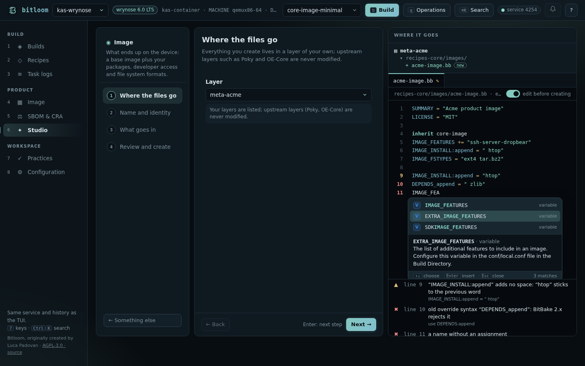

BitBake assistant
Writing a recipe, an append or a configuration file by hand is where most Yocto mistakes start: an override written the old way, :append without its leading space, a class or a variable with a typo. Bitloom's assistant knows the vocabulary of your project and helps where you write, in the web dashboard, in the terminal and in CI.
Everything comes from the layers the project builds with, so it matches its release:
- variable and task documentation from OE-Core's
conf/documentation.conf, plus every variable the project's classes and configuration files set; - the classes, include files and recipes of the layers;
- machines (
conf/machine) and distributions (conf/distro); - licences (
files/common-licenses), image features (IMAGE_FEATURES[validitems],FEATURE_PACKAGES_*,COMPLEMENTARY_GLOB) and tasks.
On Scarthgap debug-tweaks is an image feature; on Wrynose it is not, and the assistant knows it because it reads the project's own layers.
Completion#
Suggestions follow what you are writing:
| You type | You get |
|---|---|
| a word at the start of a line | variables (with their documentation) and keywords (inherit, require, addtask…) |
inherit |
the classes of the project |
require / include |
include files, with their path in the layer |
VAR: |
append, prepend, remove, machines, distributions, class-target, pn-…, task-… |
VAR[ |
variable flags (sha256sum, depends, noexec, vardeps…) |
${ |
variables |
a value of DEPENDS, RDEPENDS, IMAGE_INSTALL |
recipes |
a value of IMAGE_FEATURES, DISTRO_FEATURES, MACHINE_FEATURES |
the features of this release |
a value of MACHINE, DISTRO, LICENSE |
machines, distributions, licences |
addtask x after |
tasks |
In the web dashboard (Studio, edit before creating) suggestions appear as you type and with Ctrl+Space: ↑/↓ choose, Enter or Tab insert, Esc closes. Each suggestion shows its kind (V variable, C class, R recipe, T task, M machine…), the letters you typed in bold, and the documentation of the selected one. Below the editor, the meaning of the word under the cursor.
Screenshot The assistant in Studio's editor on a real Wrynose project: suggestions with documentation, and the problems below

In the terminal editors (open a file in Recipes, edit a runtime file, new file): Ctrl+Space lists the suggestions (Enter inserts, Esc returns to the text), Alt+D describes the word under the cursor, and a line under the editor shows the problems as you type.
Problems as you write#
| Problem | Why it matters |
|---|---|
DEPENDS_append, RDEPENDS_${PN} |
the old override syntax: BitBake 2.x (Yocto 3.4 and later) stops parsing |
IMAGE_INSTALL:append = "htop" |
:append adds no space: the word sticks to the previous one (openssh-sshdhtop) |
:append together with += |
one of the two is enough |
FILESEXTRAPATHS:prepend without := or without the trailing : |
your files are not found, or the search path breaks |
an unclosed quote, a value without quotes, a { never closed |
parse errors |
| a class that is not in the layers | “did you mean systemd?” |
a require that points nowhere |
parse error |
MACHINE, DISTRO that the layers do not define; an image feature this release does not have |
the build fails late, or silently ignores it |
a variable one letter away from a known one (IMAGE_INSTAL, DESCRIPTIOM) |
a typo BitBake accepts silently: the value is simply lost |
SRC_URI[md5sum] |
deprecated: use sha256sum |
Checked against the 1,037 recipes of OE-Core and meta-yocto on Wrynose, the assistant reports a handful of findings, all real: among them a typo in OE-Core itself (DESCRIPTIOM in compiler-rt) and an :append without its space in clang.
Command line and CI#
$ bitloom --lint meta-acme # folders are searched for .bb, .bbappend, .bbclass, .inc and .conf
meta-acme/recipes-app/hello/hello_1.0.bb:2: ✖ old override syntax “DEPENDS_append”: BitBake 2.x rejects it
→ use DEPENDS:append
12 files · 1 errors · 0 warnings · 0 notes
$ echo $?
2
$ bitloom --explain IMAGE_FEATURES
IMAGE_FEATURES · variable
The primary list of features to include in an image. Configure this variable in an image recipe.
--lint exits 2 on errors (--fail-on warning also on warnings, --fail-on never reports only) and --format json gives the findings to other tools. It runs in seconds, without BitBake, so it fits a merge-request check before the build.
What it does not do#
The assistant reads files; it does not run BitBake. Values computed at parse time, variables set by classes outside the project and Python code are not evaluated: for those, Bitloom's Resolve one BitBake variable and the Developer workbench's variable origins ask BitBake itself. Full editing stays in your editor; for VS Code, the Yocto Project's BitBake extension complements Bitloom.